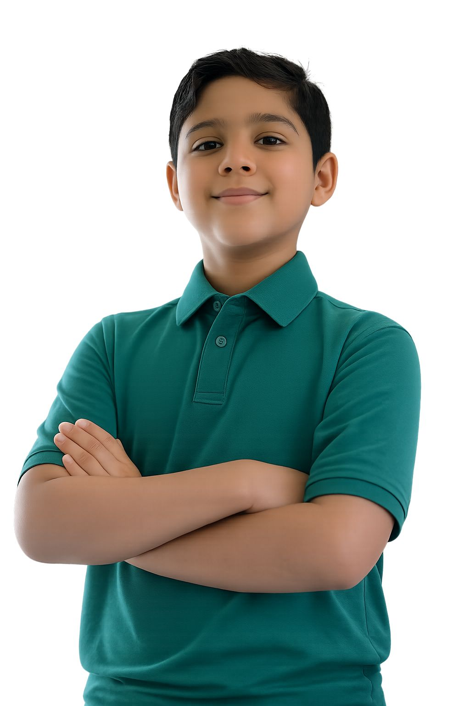

Raahiv Mahajan, an 11-year-old from Gurugram, has been our Super Segregator this month! He follows all segregation rules diligently, turning his home into a zero-waste zone. His passion for the environment started with a school project, and now he inspires his entire neighborhood.
Will you encourage your family, school and community to segrgeate waste ?
Will you use more recycled materials and share tips on social media ?